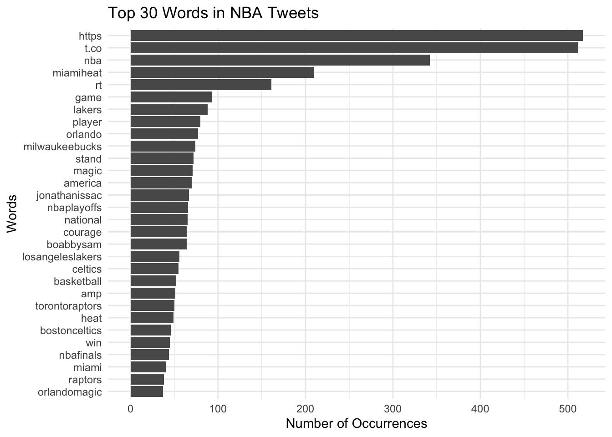
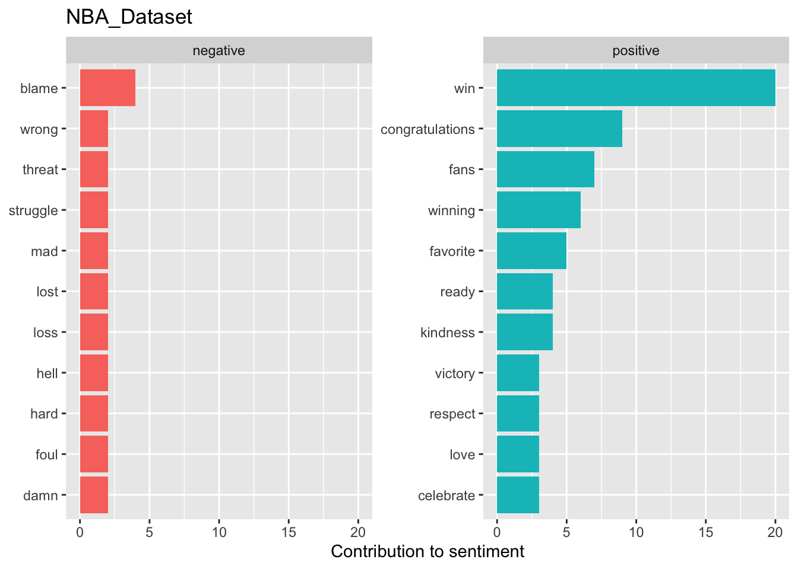
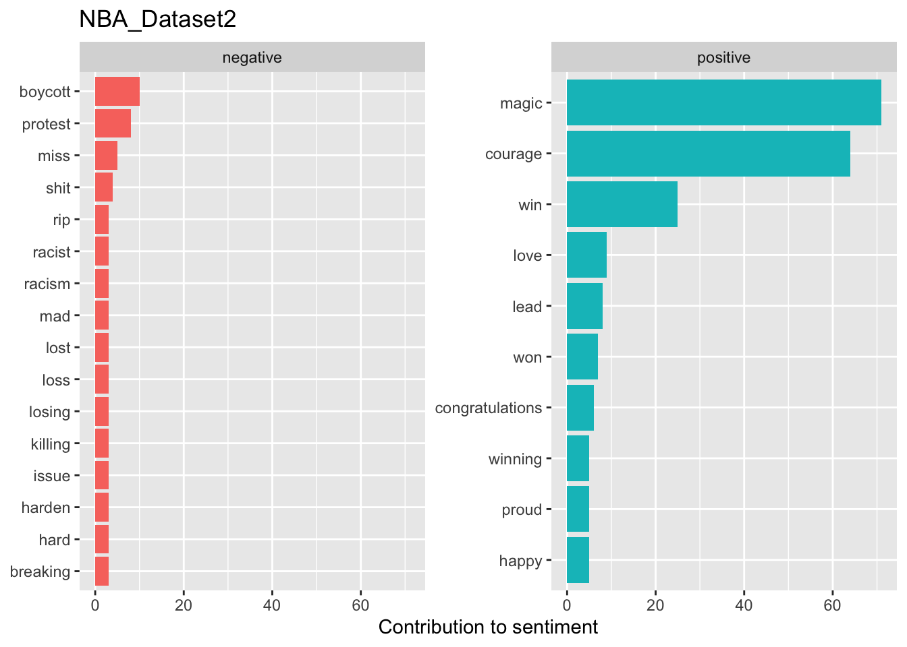
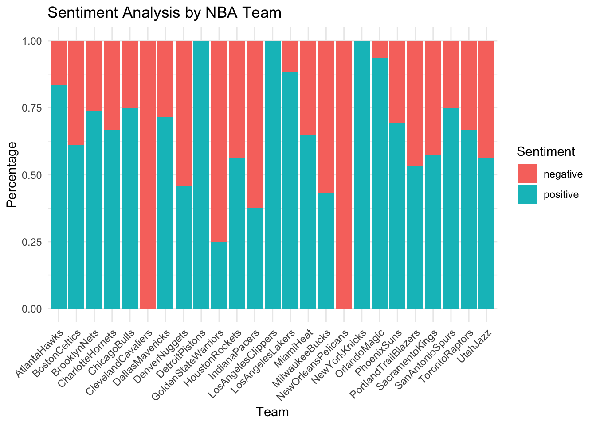
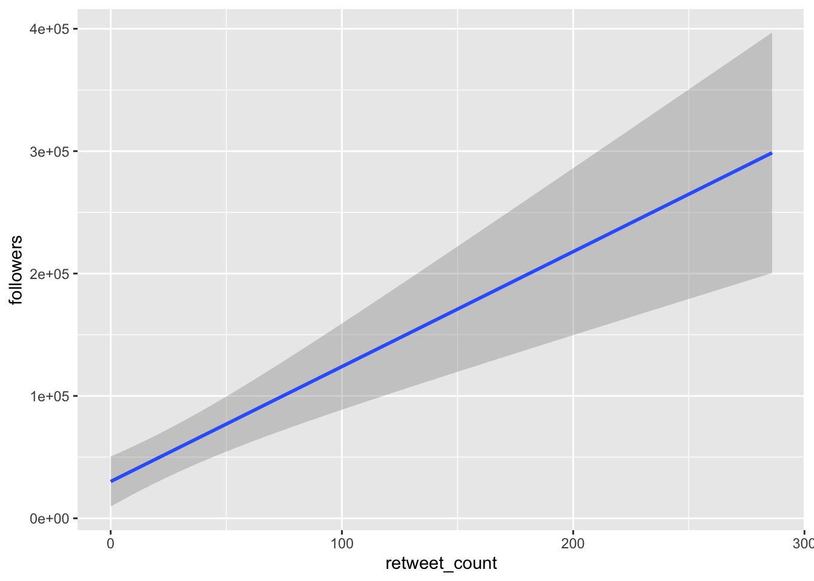

#This project is about the NBA dataset involving tweets comments from every team on Kaggle. There are four significant questions: 1. What teams people like the most by doing sentiment analysis? 2. What the top 30 words/phrases are popular to use when tweeting? 3. what are the most followers/friends in every team? 4. What are the relationships between retweet count and comments? 5. What can you tell from the geographic location of these commenters?
#In the NBA dataset, I will use file_name, follower, friends location, retweet_count, text and username as variables to address the questions.
NBA_Dataset <-read_csv(here("NBADataset - 13-09-2020 till 13-10-2020.csv"))
Rows: 18721 Columns: 15
── Column specification ────────────────────────────────────────────────────────
Delimiter: ","
chr (9): file_name, group_name, location, screenname, search_query, text, u...
dbl (5): followers, friends, retweet_count, twitter_id, polarity
dttm (1): created_at
ℹ Use `spec()` to retrieve the full column specification for this data.
ℹ Specify the column types or set `show_col_types = FALSE` to quiet this message.
NBA_Dataset2 <-read_csv(here("NBADataset - 12-07-2020 till 19-09-2020.csv"))
Rows: 98104 Columns: 15
── Column specification ────────────────────────────────────────────────────────
Delimiter: ","
chr (9): file_name, group_name, location, screenname, search_query, text, u...
dbl (5): followers, friends, retweet_count, twitter_id, polarity
dttm (1): created_at
ℹ Use `spec()` to retrieve the full column specification for this data.
ℹ Specify the column types or set `show_col_types = FALSE` to quiet this message.
#DATA CLEANING AND TIDYING: #Rename and Delete the unnecessary column
df_filtered_NBA_Dataset <- NBA_Dataset %>%filter(followers >=5000, friends >=3000, retweet_count >=0) %>%distinct(username, .keep_all =TRUE) df_filtered_NBA_Dataset2 <- NBA_Dataset2 %>%filter(followers >=5000, friends >=3000, retweet_count >=0) %>%distinct(username, .keep_all =TRUE)#what username has the total most followers and friends in every team of both df_filtered dataset?most_followers_and_friends <- df_filtered_NBA_Dataset %>%mutate(followers_friends = followers + friends) %>%group_by(NBAteam) %>%top_n(1, followers_friends) %>%arrange(desc(followers_friends))most_followers_and_friends2 <- df_filtered_NBA_Dataset2 %>%mutate(followers_friends = followers + friends) %>%group_by(NBAteam) %>%top_n(1, followers_friends) %>%arrange(desc(followers_friends)) # Interestingly, Username WORLDSTARHIPHOP won both for the total most followers and friends in LosAngelesLakers team(5200830) in NBA_Dataset, and MilwaukeeBucks (5108420) in NBA_Dataset2.
#How many NBAteams are contained in both df_filtered_dataset? #Pivoting data
df_count_NBA_Dataset <- df_filtered_NBA_Dataset %>%group_by(NBAteam) %>%summarise(count =n()) %>%pivot_longer(cols =-NBAteam, values_to ="count") %>%select(-name) %>%select(NBAteam, count) %>%arrange(desc(count))# There are 20 NBAteams contained in the df_filtered_NBA_Dataset.df_count_NBA_Dataset2 <- df_filtered_NBA_Dataset2 %>%group_by(NBAteam) %>%summarise(count =n()) %>%pivot_longer(cols =-NBAteam, values_to ="count") %>%select(-name) %>%select(NBAteam, count) %>%arrange(desc(count))#There are 28 NBAteams contained in the df_filteed_NBA_Dataset2.
#How many distinct username appear in the same location in both df_filtered dataset?
#Using Joins for the data distinct_usernames <-inner_join(df_filtered_NBA_Dataset, df_filtered_NBA_Dataset2,by =c("username", "location")) %>%distinct(username, location) %>% nrow#There are integer 63 distinct usernames appear in the same location
#What can you tell from the geographic location of these commenters?
# A tibble: 10 × 2
location count
<chr> <int>
1 New York, NY 3
2 Boston, MA 2
3 Florida, USA 2
4 Las Vegas, NV 2
5 Miami, FL 2
6 Miami, Florida 2
7 Toronto 2
8 USA 2
9 617 1
10 Akron, OH 1
# display the bottom 10 distinct locationsbottom_10_locations <-tail(distinct_locations, 10)print(bottom_10_locations)
# A tibble: 10 × 2
location count
<chr> <int>
1 United States 1
2 United States of America 1
3 West Palm Beach, FL 1
4 Windermere, FL 1
5 Worldwide 1
6 austin,texas 1
7 globe 1
8 iPhone: 0.000000,0.000000 1
9 ÜT: -26.17136,27.71184 1
10 ÜT: 29.457981,-82.270872 1
# print the full list of distinct locations and their countsdistinct_locations
# A tibble: 54 × 2
location count
<chr> <int>
1 New York, NY 3
2 Boston, MA 2
3 Florida, USA 2
4 Las Vegas, NV 2
5 Miami, FL 2
6 Miami, Florida 2
7 Toronto 2
8 USA 2
9 617 1
10 Akron, OH 1
# … with 44 more rows
# we can infer that there is a strong interest in the NBA across various regions in the United States. The top locations where commenters appeared include major cities such as New York, Los Angeles, and Chicago, as well as other cities and states like Houston, Texas and Ohio. The bottom locations include less populated areas such as Guam and Northern Mariana Islands.
#What the top 30 words/phrases are popular to use when tweeting?
library(ggplot2)library(tidytext)# combine comments from both datasetscombined_data <-bind_rows(df_filtered_NBA_Dataset, df_filtered_NBA_Dataset2)# convert to tidy formattidy_data <- combined_data %>%unnest_tokens(word, comment)# remove stop wordstidy_data <- tidy_data %>%anti_join(stop_words)
Joining with `by = join_by(word)`
# count occurrences of each wordword_counts <- tidy_data %>%count(word, sort =TRUE)# plot top 30 wordstop_30_words <- word_counts %>%slice_max(n =30, n)ggplot(top_30_words, aes(x = n, y =fct_reorder(word, n))) +geom_col() +labs(title ="Top 30 Words in NBA Tweets",x ="Number of Occurrences",y ="Words") +theme_minimal()

#The chart below shows that people like the most to post websites link when tweeting whereas "orlandomagic" are showing the least amount in NBA tweets, but "orlando" and "magic" appeared far more than "orlandomagic" in the top 30 words, assuming people like used abbreviation rather than calling the complete team.
#What are the top 10 negetive and positive words do people say?
df_filtered_NBA_Dataset %>%filter(n_distinct(NBAteam) >=10) %>%unnest_tokens(word, comment) %>%anti_join(stop_words) %>%inner_join(get_sentiments("bing")) %>%count(word, sentiment, sort =TRUE) %>%ungroup() %>%group_by(sentiment) %>%slice_max(n, n =10) %>%ungroup() %>%mutate(word =reorder(word, n)) %>%ggplot(aes(n, word, fill = sentiment)) +geom_col(show.legend =FALSE) +facet_wrap(~sentiment, scales ="free_y") +labs(x ="Contribution to sentiment", y =NULL) +ggtitle("NBA_Dataset")
Joining with `by = join_by(word)`
Joining with `by = join_by(word)`

df_filtered_NBA_Dataset2 %>%filter(n_distinct(NBAteam) >=10) %>%unnest_tokens(word, comment) %>%anti_join(stop_words) %>%inner_join(get_sentiments("bing")) %>%count(word, sentiment, sort =TRUE) %>%ungroup() %>%group_by(sentiment) %>%slice_max(n, n =10) %>%ungroup() %>%mutate(word =reorder(word, n)) %>%ggplot(aes(n, word, fill = sentiment)) +geom_col(show.legend =FALSE) +facet_wrap(~sentiment, scales ="free_y") +labs(x ="Contribution to sentiment", y =NULL) +ggtitle("NBA_Dataset2")
Joining with `by = join_by(word)`
Joining with `by = join_by(word)`

#In charts, NBA_Dataset has most negative words "blame" whereas positive words "win" gets almost the full point. In the NBA_Dataset2, however, the most negative words is "boycott" whereas most positive words is "magic". This dataframe shows that there are more positive words than negative words in both dataset, representing people are in favor of positive words.
#What teams people like the most by doing sentiment analysis?
`summarise()` has grouped output by 'NBAteam'. You can override using the
`.groups` argument.
# calculate total sentiment count by teamteam_count <- sentiment_count %>%group_by(NBAteam) %>%summarize(total_count =sum(count))# calculate sentiment percentage by teamsentiment_count <- sentiment_count %>%left_join(team_count) %>%mutate(percentage = count / total_count)
Joining with `by = join_by(NBAteam)`
# plot sentiment percentage by teamggplot(sentiment_count, aes(x = NBAteam, y = percentage, fill = sentiment)) +geom_bar(stat ="identity", position ="stack") +labs(title ="Sentiment Analysis by NBA Team",x ="Team",y ="Percentage",fill ="Sentiment") +theme_minimal()+theme(axis.text.x =element_text(angle =45, hjust =1))

#Among the 25 NBAteam, ClevelandCavaliers and NewOrleansPelicans are the two who received the most negetive comment, whereas DetroitPistons, LosAngelesClippers and NewYorkKnicks are the three who received the most positive comment. Assuming that people don't like ClevelandCavaliers and NewOrleansPelicans but really like DetroitPistons, LosAngelesClippers and NewYorkKnicks.
#What are the relationships between retweet count and followers?
# combine the two datasetsdf_combined <-bind_rows(df_filtered_NBA_Dataset, df_filtered_NBA_Dataset2)# plot retweet count vs. comment countggplot(df_combined, aes(x = retweet_count, y = followers)) +# geom_point() +geom_smooth(method ="lm")
`geom_smooth()` using formula = 'y ~ x'

labs(title ="Relationship Between Retweet Count and followers",x ="retweet_count",y ="followers") +theme_minimal() #+
NULL
# scale_x_continuous(trans = "log10")#The chart below show there are 95% confident rate that the more retweet count, the more followers it has, representing the significant care of positive relationship for the NBA event.